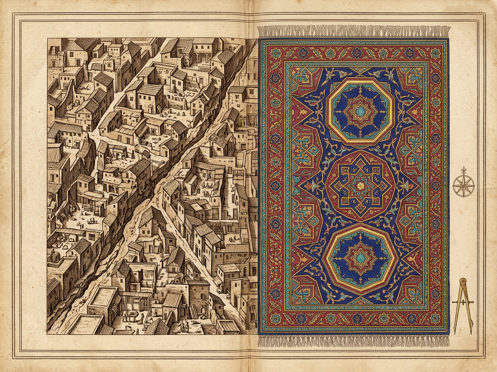
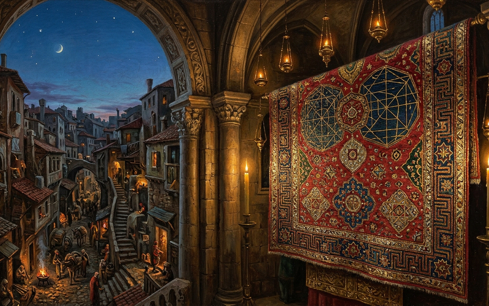

VI · Cities & the Sky · 1
EUDOXIA
Sanctuary of the Symmetrical Carpet & the Shapeless Crumbling Stain
Augurs' Reading: Symmetrical Carpet = Divine Starry Orbits (0.00)
0.00 · CARPET SKY
Opposite Conclusion: Shapeless Crumbling Stain = True Map of the Universe (1.00)
1.0× · Macro
[5] Axis Augurii · 330.0 Hz
Central Twelve-Ray Medallion (u=0.50, v=0.50) — Twelve-rayed crimson-gold rosette mirrors the temple housing this carpet.
Sanctuary of the Preserved Loom (x=0.51, y=0.53) — Quiet stone cell amid the crooked press where the symmetrical carpet hangs.
Augurs' Reading: The Symmetrical Carpet Holds the Starry Orbits
The carpet's crimson, indigo, and magenta geometry reflects the divine sky; crooked Eudoxia is merely an incomplete human blotch.
9/9 Bijection · Both Oracles Valid
Slumps: 0 · Screams: 0 · Jostles: 0
Origin
Destination
Crimson Straight+Circular Thread ↔ Crooked Alley Detour · Tortuosity 2.18×
[1] Crimson
Crimson Warp Gate
Alley of Packed Mules
[2] Indigo
Northern Lapis Octagram
Lintels of Black Smoke
[3] Magenta
Magenta Spiral Volute
Brine & Fish-Smell Stairs
[4] Magenta
Locked Lozenge Enclosure
Dead-End Hovel Court
[5] Crimson
Central Twelve-Ray Medallion
Sanctuary of the Preserved Loom
[6] Crimson
Diagonal Crimson-Gold Fret
Scarp of Crumbling Walls & Landslides
[7] Indigo
Twin Indigo Cartouche
Stacked Slope Hovels
[8] Crimson
Southern Octagram Rosette
Brazier Alley of Night Fires
[9] Magenta
Magenta Fringe Selvedge
Darkness of Night Screams
Survey Map of Eudoxia — 1600×1200

Sanctuary Painting of Eudoxia — 1600×1000

Archival Folio · City 35: Eudoxia · Move pointer when [Z] Loupe is active to inspect weave and alley detail · Press [Esc] or [P] to return.